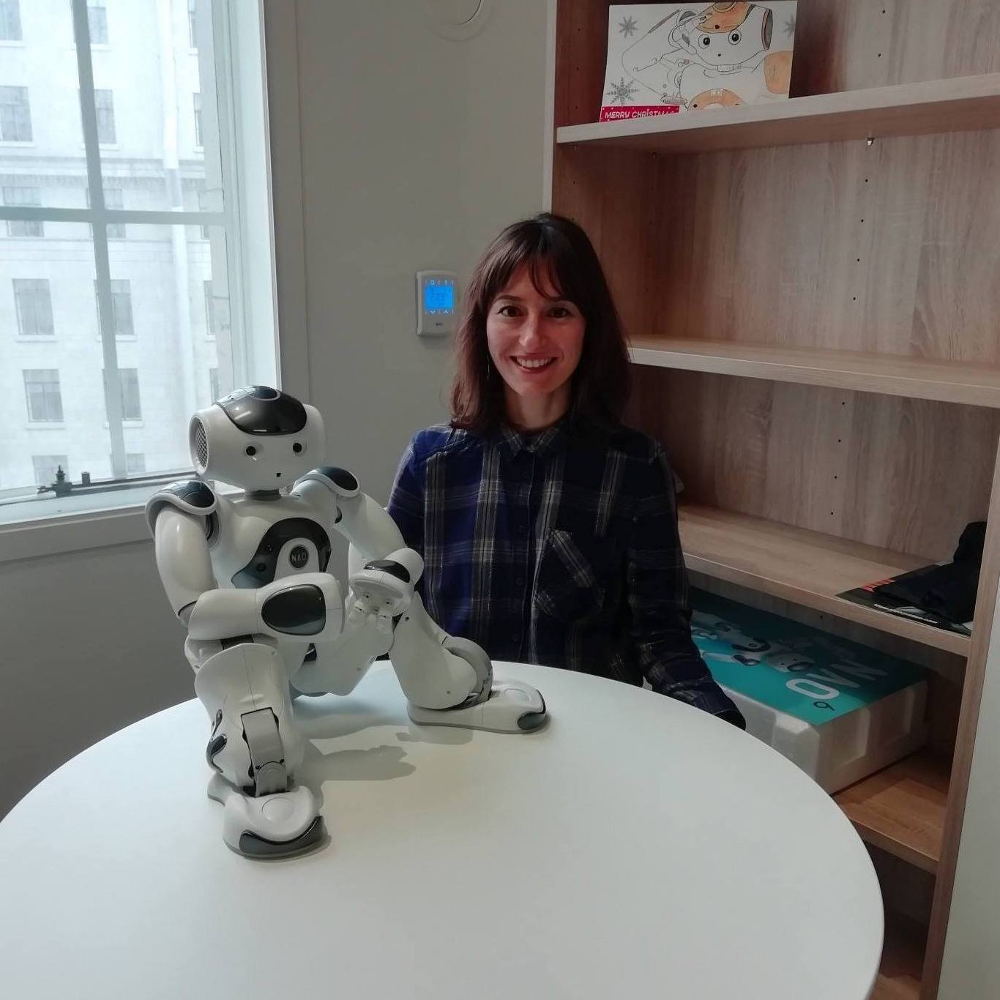

Important Dates
| Paper submission: | June 18, 2021 | Paper notification: | August 9, 2021 |
|---|---|
| Camera-ready paper submission: | September 10, 2021 |
| Workshop day: | TBA |
| Paper submission: | June 18, 2021 | Paper notification: | August 9, 2021 |
|---|---|
| Camera-ready paper submission: | September 10, 2021 |
| Workshop day: | TBA |
Full papers (8 pages + reference), short papers (4 pages + references) and poster abstracts (3 pages + references) are invited for submission. Paper submission will be done via EasyChair. Please see Call for Papers for further details.
Prof. Antonia HamiltonUniversity College London |
Dr. Stefan SchererEmbodied, Inc. |
Prof. Laurel RiekUniversity of California, San Diego |
We plan a full day workshop. Tentative schedule can be found below.
| 09:00 - 09:20 | Opening talk |
|---|---|
| 09:20 - 10:20 | Keynote talk 1 |
| 10:20 - 10:40 | Coffee break |
| 10:40 - 12:00 | Oral sessions 1 |
| 12:00 - 13:00 | Lunch break |
| 13:00 - 14:00 | Keynote talk 2 |
| 14:00 - 15:20 | Oral session 2 |
| 15:20 - 15:40 | Coffee break |
| 15:40 - 17:00 | Oral session 3 |
| 17:00 - 18:00 | Panel session |
The Socially-Informed AI for Healthcare will be a cross-disciplinary workshop combining expertise in psychology, biostatistics and health informatics, artificial intelligence and robotics and experience in the perception and production of nonverbal behaviours particularly using vision, speech and other sensory information (e.g., wearables).
Topics include, but are not limited to:
The paper submission deadline is on June 8th. Papers should be submitted via Easychair. Submissions should follow the ACM ICMI template, and be submitted as .pdf files. The review process will be double blind, and therefore the papers should be appropriately anonymized.
For papers specifically focusing on the generation of nonverbal cues and the evaluation of the generated cues, we also encourage authors to consider submitting to the GENEA workshop simutaneously taking place at ACM ICMI’21. For more information, please see https://genea-workshop.github.io/2021/.

Oya CeliktutanEngineering King’s College London United Kingdom |
Alexandra GeorgescuPsychology King's College London United Kingdom |
Nicholas CumminsBiostatistics and Health Informatics King's College London, United Kingdom |
| Hatice Gunes | University of Cambridge |
|---|---|
| Shrikanth Narayanan | University of Southern California |
| Mohamed Chetouani | Sorbonne Universite, ISIR-UPMC, CNRS |
| Abhinav Dhall | Monash University |
| Itir Onal Ertugrul | Tilburg University |
| Heysem Kaya | Utrecht University |
| Vidhyasaharan Sethu | The University of New South Wales |
| Shiro Kumano | NTT Communication Science Labs |
| Mathew Magimai Doss | Idiap Research Institute |
| Tanaya Guha | The University of Warwick |
| Evangelos Sariyanidi | Children's Hospital of Philadelphia |
| Theodora Chaspari | Texas A&M University |
| Zerrin Yumak | Utrecht University |
| Gelareh Mohammadi | University of New South Wales |
| Dongmei Jiang | Northwestern Polytechnical University |
| Chi-Chun Lee | National Tsing Hua University |
| Hanan Salam | NYU Abu Dhabi |
| Siyuan Chen | The University of New South Wales |
| Tan Viet Tuyen Nguyen | King's College London |